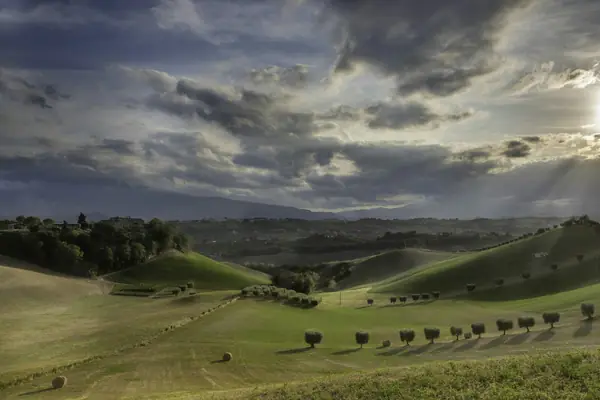

Home › Wine regions › Marche
Marche wine region

Photo: Alessio Zappatore on Unsplash
Age-worthy Verdicchio and juicy reds.
Vines grow in all 20 regions. Wines are classed DOCG, DOC and IGT.
CountryItaly
Notable producers in Marche
- Umani Ronchi
- Garofoli
- Bucci
- La Monacesca
- Moroder
Official appellations
| Appellation | Status | Style | Grapes |
|---|---|---|---|
| Castelli di Jesi Verdicchio Riserva (2010) Top tier of Verdicchio from the hills of the Esino valley west of Ancona, on clay and limestone with sandy patches, cooled by Adriatic breezes. At least 85% Verdicchio, aged a minimum of 18 months including 6 in bottle; 'Classico' may be used only for the historic heart of the zone. Good to know: the basic and Superiore wines stay under the Verdicchio dei Castelli di Jesi DOC, and the best Riservas age for a decade or more. | DOCG | White | Verdicchio |
| Conero (2004) Red-only DOCG on the slopes of Monte Conero, the limestone headland that drops into the Adriatic just south of Ancona, with a mild, sunny maritime climate. At least 85% Montepulciano with up to 15% Sangiovese; every bottle is a Riserva with a minimum of 2 years' ageing. Good to know: younger wines from the same grapes and area are sold as Rosso Conero DOC. | DOCG | Red | Montepulciano |
| Offida (2011) Hilly zone around Offida and the Ascoli Piceno province in southern Marche, between the Sibillini mountains and the Adriatic, on clay and sandy soils. Three wines: Offida Pecorino and Offida Passerina (each at least 85% of the grape) and Offida Rosso (at least 85% Montepulciano, aged 24 months including 12 in wood). Good to know: Pecorino, once nearly extinct, was revived here and its crisp, herbal whites are now the zone's calling card. | DOCG | White, Red | Pecorino, Passerina, Montepulciano |
| Verdicchio di Matelica Riserva (2010) Verdicchio Riserva from the inland Matelica basin, the only Marche valley running north–south rather than to the sea, so it is higher and more continental with cold nights and warm days. At least 85% Verdicchio with a minimum of 18 months' ageing, giving taut, mineral whites with good acidity. Good to know: younger wines are sold under the Verdicchio di Matelica DOC, and output is far smaller than in the Castelli di Jesi. | DOCG | White | Verdicchio |
| Vernaccia di Serrapetrona (2004) Red sparkling wine from Serrapetrona and parts of neighbouring communes in the hills of Macerata province. At least 85% Vernaccia Nera, of which at least 40% must be lightly dried grapes, the wine going through three fermentations to emerge sparkling in dry (secco) or sweet (dolce) styles. Good to know: it is one of Italy's few red sparkling DOCGs; the still red from the same area is Serrapetrona DOC. | DOCG | Sparkling | Vernaccia Nera |
| Bianchello del Metauro Light white from the Metauro valley. | DOC | White | Bianchello |
| Colli Maceratesi Whites from the local Ribona (Maceratino) grape. | DOC | White | Ribona |
| Colli Pesaresi Northern Marche hills near Pesaro. | DOC | White, Red | Sangiovese, Trebbiano |
| Esino Broad DOC in the Esino valley. | DOC | White, Red | Verdicchio, Montepulciano |
| Falerio Southern Marche white blend. | DOC | White | Trebbiano, Passerina, Pecorino |
| I Terreni di Sanseverino Small DOC near San Severino Marche. | DOC | Red | Vernaccia Nera, Montepulciano |
| Lacrima di Morro d'Alba Intensely floral, rose-scented red from the Lacrima grape. | DOC | Red | Lacrima |
| Pergola Aleatico-based reds from near Pesaro. | DOC | Red | Aleatico |
| Rosso Conero (1967) Montepulciano from Monte Conero, younger than the DOCG Riserva. | DOC | Red | Montepulciano |
| Rosso Piceno (1968) Montepulciano-Sangiovese blend across much of the Marche; Superiore in the south. | DOC | Red | Montepulciano, Sangiovese |
| San Ginesio Small DOC in the Sibillini foothills. | DOC | Red | Vernaccia Nera, Sangiovese |
| Serrapetrona Still red from Vernaccia Nera. | DOC | Red | Vernaccia Nera |
| Terre di Offida Passerina-based whites around Offida. | DOC | White | Passerina |
| Verdicchio dei Castelli di Jesi (1968) Crisp, almond-edged Verdicchio from the hills west of Ancona. | DOC | White | Verdicchio |
| Verdicchio di Matelica (1967) Verdicchio from a high inland valley: firmer and more mineral. | DOC | White | Verdicchio |
Marche wines to try
Bucci Verdicchio dei Castelli di Jesi Classico Superiore
Marche · Castelli di Jesi · Verdicchio
Taut and saline: lemon, green almond and herbs, gains depth with age.
Food: Fish soup, grilled sardines, vegetable risotto
Ciù Ciù Pecorino Offida
Marche Pecorino: citrus, herbs and a savoury finish.
Food: Seafood pasta, pecorino cheese
More wine regions in Italy
TuscanyPiedmontVenetoSicilyAosta ValleyLombardyTrentino-Alto AdigeFriuli-Venezia GiuliaLiguriaEmilia-RomagnaUmbriaLazioAbruzzoMoliseCampaniaPugliaBasilicataCalabriaSardinia
The Wine Reference newsletter
New wines, stories and career guides, one email a week at most.
Over 18s only. Unsubscribe any time with one click. Your email is stored securely by Kit and never shared.
Support The Wine Reference
This guide is free, with no paywall. If it helped you choose a bottle, you can buy me a glass and keep it growing.
🍷 Buy me a glass